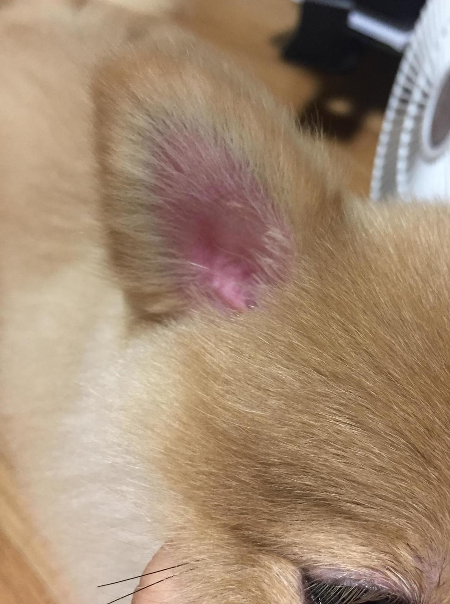
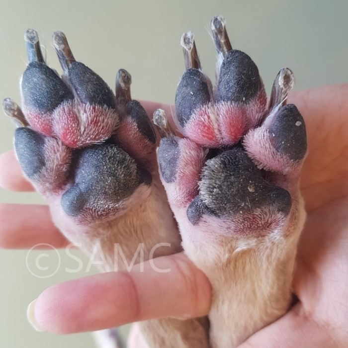

알레르기 피부염입니다.


-원인: 곰팡이, 꽃가루, 먼지, 다른 동물의 대변 등의 알레르겐, 알레르기를 유발하는 음식
-증상: 피부에 붉은 돌기, 외이염 동반, 심각한 가려움
√알레르기의 원인이 되는 음식물의 변화, 환경의 변화 등을 유추하여 원인물질을 일상속에서 제거하기
√알레르기를 억제하는 연고나 가려움증과 염증을 진정시키는 주사처방으로 치료하기